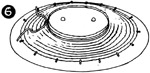

1952—How to Make Hats
by Ruby Carnahan
Making Straw Braid Crowns and Brims on Wood Hat Blocks
MATERIAL REQUIRED
- 8 to 10 yards of 1" straw braid.
- Utility brim block with correct headsize band block for brim.
- Utility head block in correct headsize for crown.
BLOCKING BRIM
Wrap straw in damp towel for several hours before using. (Illus. 1)
Measure desired width of brim on brim block and draw a line for brim edge around block. (Illus. 2)
Starting in back and using push pins, pin first row of braid to block on this line. Lap each row of braid slightly until headsize is reached (Illus. 3).
Turn braid up 1/2" on headband block and cut braid off (Illus. 4).
 Slip straight pins into braid and remove push pins, except around brim
edge. Press carefully with an iron and a damp cloth (Illus. 5).
Slip straight pins into braid and remove push pins, except around brim
edge. Press carefully with an iron and a damp cloth (Illus. 5).
Be sure iron is not too hot. (Illus. 6) Tie a cord tight around headsize over straw and let straw brim dry on block. Mark back and front of brim.
When thoroughly dry, remove brim from block and sew each row of braid together, concealing stitches in braid. Measure a wire to fit brim edge and join with a wire joiner. Pin wire to facing of brim and whip wire to braid around brim edge. Fit a row of braid over wire and sew braid around brim edge. Steam this row of braid slightly. Return brim to block and pin down. Apply a coat of straw sizing and allow brim to dry on block.
BLOCKING CROWN
 Measure head from back to front and from side to side for desired depth of
crown. Mark measurements on crown block and draw a line around block, (Illus.
7)
Measure head from back to front and from side to side for desired depth of
crown. Mark measurements on crown block and draw a line around block, (Illus.
7)
Wind one end of the straw braid with thread and manipulate braid into a circle. Sew about two rows of braid, then pin to top of block. Continue pinning rows of braid to block, lapping each row slightly and pulling braid to fit block, until crown is desired depth. (Illus. 8) Cut braid off on a slant and run last row of braid off to nothing. Slip straight pins into straw and remove push pins. Press slightly with an iron and damp cloth and let dry on block. Mark back and front of crown.
When dry, remove from block and sew each row of braid, concealing stitches in straw. Again place crown on block and pin to block around the bottom with push pins (Illus. 9). Apply a coat of straw sizing and let crown dry on block.
SEWING CROWN AND BRIM TOGETHER
Match front and back markings on crown and brim, pin together, then sew crown to brim around headsize. Finish head-size with a swirled ribbon headband.
If tuscan or any other lacey braid is used (Illus. 10a), run wire for brim edge through velvet tubing. (Illus. 10b)
Join wire ends with a joiner then neatly finish lap ends of tubing with several slip stitches. (Illus. 10c)
Pin velvet tubing to under side of brim and slip stitch tubing to straw. (Illus. 11)